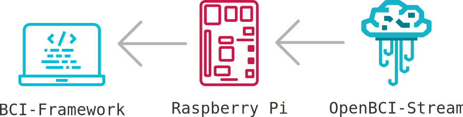

Illustrative example¶
In this example we will create an acquisition server on a Raspberry Pi and stream EEG data in real-time from them through Kafka using the OpenBCI-Stream library.

Devices used:
Raspberry Pi 4 Model B 4GB RAM
Cyton Biosensing Board (8-channels)
OpenBCI WiFi Shield
Computer (with WiFi)
Conventions used:
The red window frames indicate that this window is “owned” by Raspberry through remote connection using SSH.
The IP for the Raspberry is 192.168.1.1
The IP for the OpenBCI WiFi Shield is 192.168.1.113
Acquisition server¶
The guide to create an acquisition server explain the process to set up the server over a Raspberry Pi, after finish and reboot the system the Raspberry will be an Acces Point, we must connect the OpenBCI WiFi Shield to this network as well as the main computer (where BCI Framework will be executed).
We must verify that the respective daemons are running correctly on Raspberry:
$ sudo systemctl status kafka zookeeper@kafka

$ sudo systemctl status stream_eeg stream_rpyc

The system uses the NTP to synchronize clocks, so the Rasberry must have a wired connection to the internet to synchronize their own clock, to ensure this we can verify the connection and restart the daemon:
$ sudo systemctl restart ntpd
$ nptq -pn

After a while, the clock will be synchronized (notice the * in the server 186.30.58.181)

We can verify the status of the WiFi Shield with the command:
$ curl -s http:/192.168.1.113/board | jq

The above commands being executed through a SSH connection, also can be done by connecting a monitor and a keyboard to the Raspberry.
Configure montage¶
A simple montage 8 channels:

Configuration and connection with OpenBCI and then start the stream¶
Connect with the Raspberry that is running under the IP 192.168.1.1 and the WiFi Shield on 192.168.1.113. The sample frequency of 1000 samples per second with a transmission of packages of 100 samples.

Impedances¶
Once the streamming is started the impedances can be displayed from the Montages tab

Raw EEG and topoplot¶

P300 speller¶

EEG records reading¶
[1]:
from openbci_stream.utils.hdf5 import HDF5Reader
filename = "record-04_20_21-13_58_25.h5"
file = HDF5Reader(filename)
print(file)
file.close()
==================================================
record-04_20_21-13_58_25.h5
2021-04-20 13:58:25.717151
==================================================
MARKERS: ['NO-TARGET', 'TARGET']
SAMPLE_RATE: 1000
STREAMING_SAMPLE_RATE: 100
DATETIME: 1618945105.717151
MONTAGE: standard_1020
CHANNELS: {1: 'Fp1', 2: 'Fp2', 3: 'T3', 4: 'C3', 5: 'C4', 6: 'T4', 7: 'O1', 8: 'O2'}
START-OFFSET: 346.3931083679199
SHAPE: [8, 68900]
END-OFFSET: 377.5792121887207
==================================================
[2]:
with HDF5Reader(filename) as file:
data, classes = file.get_data(tmin=0, duration=0.125)
data.shape, classes.shape
[2]:
((65, 8, 125), (65,))